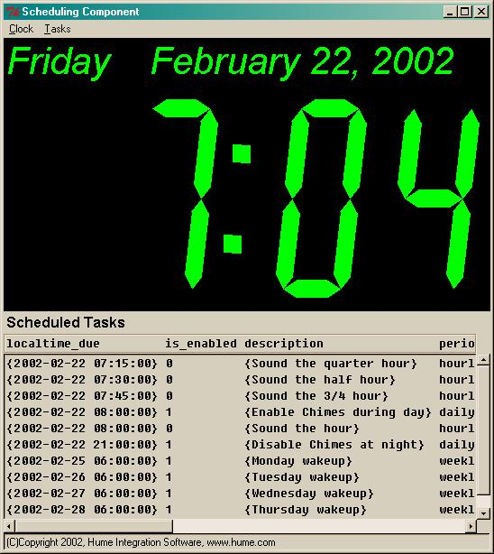
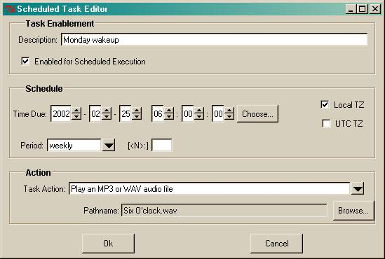

The user should have the environment variable LANG set to his current Locale. If the value of LANG is not set, the SC sets it to en_US so that English messages are presented to the user. The SC is configured for other locales by defining message catalog files. See the msgcat package document, and review the provided en.msg English message catalog file.
The SC can run in background or as a service. The GUI does not need to be instantiated or used to have scheduled tasks execute. Additional arguments on the sc_run command line are interpreted as Tcl commands and executed at startup. One use of this capability is to have the SC join a DMH message system group, so that it can send and receive DMH messages while it runs. For example, if a DMH server is already running, the SC can connect to it:
datahub "set group=demo" eof &Even if the GUI is not viewable, examining the sc_tasks table data remotely using a DMH connection can give the confidence that the SC is executing properly, and that tasks are being invoked and rescheduled.
sc_run "mbx init demo" "mbx whenmsg SC_SQL mbx_SQL" &
hubclient SC_SQL@demo &
hubclient DATAHUB@demo &
The SC can also be installed and used as a Tcl package extension in your application. The SC package name is HumeSC. To use the SC as a package, follow these steps:
option add *Lcdclock.Foreground turquoise userDefaultIn this same file, you can also add custom startup code.
option add *Lcdclock.Background grey32 userDefault
option add *Lcdclock.Height 250 userDefault
option add *Lcdclock.Date 1
option add *Lcdclock.Hours 12
option add *Lcdclock.Seconds 0
option add *Lcdclock.Tilt 0
option add *Lcdclock.Utc 0
The resource customization can also be done on POSIX platforms using the .Xdefaults file and a different syntax for X-Windows resources. See the X-Windows documentation.
The dialog used to configure tasks has the following appearance:

Hopefully, most of the expected usage is self-evident. Some notes:
Tcl Command Syntax
sc_gui {w .sc_gui}Return Value
NoneDescription
This command creates the main Graphical User Interface window of the SC application. The window name used can be optionally specified.
Tcl Command Syntax
sc_load_dataReturn Value
NoneDescription
This command attempts to read the SQL table image file sc_tasks.tab and then restart timers for the tasks found in the file. As the SC runs, it updates the sc_tasks.tab file image. The file is plain text SQL statements and may be manually edited before starting the SC. Past due one-shot tasks are deleted from the table without execution. Periodic tasks are moved to the next future time due.
Tcl Command Syntax
sc_main {want_gui 1}Return Value
NoneDescription
This command is the main entry to running the SC. It requests the additional Tcl packages needed by the software including Humelib and msgcat, and then executes, sc_schema, sc_load_data, and optionally sc_gui. The scheduling logic starts running with the execution of sc_load_data so sc_gui does not need to be called to have scheduled tasks execute.
Tcl Command Syntax
sc_schemaReturn Value
NoneDescription
This command creates the two in-memory tables described in the next section.
| Column
Name |
Key | Type | Description |
| task_type | PK | varchar(20) | A keyword to indicate the task type. { play_soundfile | exec | eval } |
| description | varchar(40) | Description text shown to the user as a prompt, such as 'Play an MP3 or WAV audio file' | |
| argprompt | varchar(20) | The prompt to be displayed for the file system Browse.. button such as 'Pathname:' |
| Column
Name |
Key | Type | Description |
| utctime_due | PCK | varchar(19) | A timestamp for the task due time in the UTC timezone. (localtime 10) |
| timer_id | PCK | varchar(20) | A unique name for an ep_timer instance used to schedule the task. |
| localtime_due | varchar(19) | A timestamp for the task due time in the local timezone. (localtime 9) | |
| period | varchar(20) | The period interval for periodic tasks. Blank or one-shot for aperiodic tasks. Should be equal to a year or less duration. { N [second[s]] | N day[s] | N week[s] | weekly | hourly | daily | N hour[s] | N minute[s] } | |
| is_enabled | integer | Used as a boolean to determine whether the task is executed when the current time becomes the time due. | |
| is_utc_schedule | integer | Used as a boolean to determine whether the task is scheduled in the local timezone or in the UTC timezone. The task configuration GUI will present the task data and pre-select the timezone checkbox accordingly. Also, for periodic tasks that are scheduled in the local timezone where the period is an integer number of days, the scheduling logic will adjust the task time across Daylight Saving Time clock shifts so that the task occurs at the same local hour of day, if possible. Periodic tasks that are scheduled in the UTC timezone are not adjusted for Daylight Saving Time clock shifts. | |
| description | varchar(40) | A description for the scheduled task provided by the user. | |
| task | varchar(2000) | A two element list of the task type and its arguments. The arguments to the task depend on the task type. |
This document covers the Hume Integration Software developed Scheduling Component which is available for the Tcl 8.3/Tk 8.3 environment on the Windows 2000/NT and UNIX/POSIX platforms.